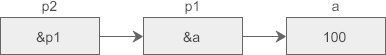

【本文结构】
- 8、二级指针（指向指针的指针）
- 9、空指针NULL 和 void指针
- 10、指针和数组
- 数组和指针绝不等价，数组是另外一种类型
- 数组在何时才会转化为指针
- 11、指针数组（数组每个元素都是指针）
- 12、一道题目玩转 指针数组 和 二级指针
- 13、二维数组指针（指向二维数组的指针）
- 14、函数指针（指向函数的指针）
- 15、彻底攻克C语言指针，再复杂的指针都可以理解
- 16、C语言指针总结
- 二级指针 / 指向指针的指针： 如果一个指针指向的是另外一个指针，我们就称它为二级指针，或者指向指针的指针。
- 指针可以指向一份普通类型的数据，例如 int、double、char 等，也可以指向一份指针类型的数据，例如 int *、double *、char * 等。
- 指针变量也是一种变量，也会占用存储空间，也可以使用 & 获取它的地址。C语言不限制指针的级数，每增加一级指针，在定义指针变量时就得增加一个星号 * 。p1 是一级指针，指向普通类型的数据，定义时有一个 * ；p2 是二级指针，指向一级指针 p1，定义时有两个 * 。
- 假设有一个 int 类型的变量 a，p1是指向 a 的指针变量，p2 又是指向 p1 的指针变量，它们的关系如下图所示：

- 将这种关系转换为C语言代码：
int a = 100;
int *p1 = &a; //p1 的值是 &a， *p1 表示 a 的值
int **p2 = &p1; //p2 的值是 &p1， *p2 表示 p1 的值，即 a 的地址； **p2 看做是 *(*p2) = *p1 = *(&a)，即 a 的值
- 高级指针
- 如果我们希望再定义一个三级指针 p3，让它指向 p2，那么可以这样写：
//三级指针
int ***p3 = &p2; //p2是二级指针
//四级指针
int ****p4 = &p3; //p3是三级指针
- 实际开发中会经常使用一级指针和二级指针，几乎用不到高级指针。
- 想要获取指针指向的数据时，一级指针加一个 * ，二级指针加两个 * ，三级指针加三个 * ，以此类推，请看代码：
#include <stdio.h>
int main() {
int a = 100;
int *p1 = &a;
int **p2 = &p1;
int ***p3 = &p2;
//输出a的值
printf("a 的值 ：a=%d *p1=%d **p2=%d ***p3=%d\n", a, *p1, **p2, ***p3);
//输出a的地址
printf("a 的地址：&a=%#X p1=%#X *p2=%#X **p3=%#X\n", &a, p1, *p2, **p3);
//输出p1的地址
printf("p1的地址：&p1=%#X p2=%#X *p3=%#X\n", &p1, p2, *p3);
//输出p2的地址
printf("p2的地址：&p2=%#X p3=%#X\n", &p2, p3);
return 0;
}
运行结果：
a 的值 ：a=100 *p1=100 **p2=100 ***p3=100
a 的地址：&a=0X12FFB24 p1=0X12FFB24 *p2=0X12FFB24 **p3=0X12FFB24
p1的地址：&p1=0X12FFB18 p2=0X12FFB18 *p3=0X12FFB18
p2的地址：&p2=0X12FFB0C p3=0X12FFB0C
- 以三级指针 p3 为例来分析上面的代码。
- ***p3 等价于 *(*(*p3))。
- *p3 得到的是 p2 的值，也即 p1 的地址；
- *(*p3) 得到的是 p1 的值，也即 a 的地址；
- 经过三次“取值”操作后，*(*(*p3)) 得到的才是 a 的值。
- 假设 a、p1、p2、p3 的地址分别是 0X00A0、0X1000、0X2000、0X3000，它们之间的关系可以用下图来描述：（ 方框里面是变量本身的值，方框下面是变量的地址。）

- 空指针NULL
- 一个指针变量可以指向计算机中的任何一块内存，不管该内存有没有被分配，也不管该内存有没有使用权限，只要把地址给它，它就可以指向，C语言没有一种机制来保证指向的内存的正确性，程序员必须自己提高警惕。
- 很多初学者会在无意间对没有初始化的指针进行操作，这是非常危险的，请看下面的例子：
#include <stdio.h>
int main() {
char *str;
//str = "http://c.biancheng.net"; //使用这一句，注释掉下面的语句 gets(str); 的话，程序可以正常运行，运行结果是：http://c.biancheng.net
gets(str);
printf("%s\n", str);
return 0;
}
- 这段程序没有语法错误，能够通过编译和链接，但当用户输入完字符串并按下回车键时就会发生错误（运行阶段？），在 Linux 下表现为段错误（Segment Fault），在 Windows 下程序直接崩溃。如果你足够幸运，或者输入的字符串少，也可能不报错，这都是未知的。
- 前面我们讲过，未初始化的局部变量的值是不确定的，C语言并没有对此作出规定，不同的编译器有不同的实现，我曾警告大家不要直接使用未初始化的局部变量。上面的代码中，str 就是一个未初始化的局部变量，它的值是不确定的，究竟指向哪块内存也是未知的，大多数情况下这块内存没有被分配或者没有读写权限，使用 gets() 函数向它里面写入数据显然是错误的。
- 强烈建议对没有初始化的指针赋值为 NULL，例如：
char *str = NULL;
- NULL 是“零值、等于零”的意思，在C语言中表示空指针。从表面上理解，空指针是不指向任何数据的指针，是无效指针，程序使用它不会产生效果。
- 注意区分大小写，null 没有任何特殊含义，只是一个普通的标识符。
- 其实，NULL 是在 stdio.h 中定义的一个宏，它的具体内容为：
#define NULL ((void *)0)
- (void *)0 表示把数值 0 强制转换为 void * 类型，最外层的 ( ) 把宏定义的内容括起来，防止发生歧义。从整体上来看，NULL 指向了地址为 0 的内存，而不是前面说的不指向任何数据。
- 在进程的虚拟地址空间中，最低地址处有一段内存区域被称为保留区，这个区域不存储有效数据，也不能被用户程序访问，将 NULL 指向这块区域很容易检测到违规指针。
- 在大多数操作系统中，极小的地址通常不保存数据，也不允许程序访问，NULL 可以指向这段地址区间中的任何一个地址。
- 注意，C语言没有规定 NULL 的指向，只是大部分标准库约定成俗地将 NULL 指向 0，所以不要将 NULL 和 0 等同起来：
- 注意 NULL 和 NUL 的区别：NULL 表示空指针，是一个宏定义，可以在代码中直接使用。而 NUL 表示字符串的结束标志 '\0'，它是ASCII码表中的第 0 个字符。NUL 没有在C语言中定义，仅仅是对 '\0' 的称呼，不能在代码中直接使用。
//下面的这种写法是不专业的
int *p = 0;
//而应该坚持写为：
int *p = NULL;
- 很多库函数都对传入的指针做了判断，如果是空指针就不做任何操作，或者给出提示信息。更改上面的代码，给 str 赋值 NULL，看看会有什么效果：

- void指针
- 对于空指针 NULL 的宏定义内容，上面只是对 ((void *)0) 作了粗略的介绍，这里重点说一下 void * 的含义。void 用在函数定义中可以表示函数没有返回值或者没有形式参数，用在这里表示指针指向的数据的类型是未知的。
- 也就是说，void * 表示一个有效指针，它确实指向实实在在的数据，只是数据的类型尚未确定，在后续使用过程中一般要进行强制类型转换。

【10 指针和数组】
- 通过前面的讲解，相信很多读者都会认为数组和指针是等价的，数组名表示数组的首地址。不幸的是，这是一种非常危险的想法，并不完全正确，前面我们将数组和指针等价起来是为了方便大家理解（在大多数情况下数组名确实可以当做指针使用）。
- 二者不等价的原因是：数组名的含义更加丰富，它即可表示数组，也可表示指向该数组的数组指针，而数组指针变量只能是数组指针。
- 数组和指针不等价的一个典型案例就是求数组的长度，这个时候只能使用数组名，不能使用数组指针：
#include <stdio.h>
int main() {
int arr[6] = { 0, 1,2,3,4,5 };
int *p = arr; //变量p是一个（一维）数组指针，指向一维数组a。
int len_arr = sizeof(arr) / sizeof(int);
int len_p = sizeof(p) / sizeof(int);
printf("len_arr: %d\n", len_arr);
printf("len_a: %d\n", len_p);
return 0;
}
运行结果：
len_arr: 6
len_a: 1
- 数组是一系列数据的集合，没有开始和结束标志，p 仅仅是一个指向 int 类型的指针，编译器不知道它指向的是一个整数还是一堆整数，对 p 使用 sizeof 求得的是指针变量本身的长度。也就是说，编译器并没有把 p 和数组关联起来，p 仅仅是一个指针变量，不管它指向哪里，sizeof 求得的永远是它本身所占用的字节数。
- 站在编译器的角度讲，变量名、数组名都是一种符号，它们最终都要和数据绑定起来。变量名用来指代一份数据，数组名用来指代一组数据（数据集合），它们都是有类型的，以便推断出所指代的数据的长度。
- 对！数组也有类型，这是很多读者没有意识到的，大部分C语言书籍对这一点也含糊其辞！我们可以将 int、float、char 等理解为基本类型，将数组理解为由基本类型派生得到的稍微复杂一些的类型。sizeof 就是根据符号的类型来计算长度的。
- 对于数组 a，它的类型是 int [6] ，表示这是一个拥有 6 个 int 数据的集合，1 个 int 的长度为 4，6 个 int 的长度为 4×6 = 24，sizeof 很容易求得。
- 对于指针变量 p，它的类型是 int * ，在 32 位环境下长度为 4，在 64 位环境下长度为 8。
- 对于二维数组，也是类似的道理，例如 int a[3][3]={1, 2, 3, 4, 5, 6, 7, 8, 9}; ，它的类型是 int [3][3] ，长度是 4×3×3 = 36，读者可以亲自测试。
- 归根结底，a 和 p 这两个符号的类型不同，指代的数据也不同，它们不是一码事，sizeof 是根据符号类型来求长度的（sizeof 是一个操作符，不是函数），a 和 p 的类型不同，求得的长度自然也不一样。
- 1、C语言标准规定，当数组名作为数组定义的标识符、sizeof 或 & 的操作数时，它才表示整个数组本身，在其他的表达式中，数组名会被转换为指向第 0 个元素的指针（地址）。
- 数组名的本意是表示一组数据的集合，它和普通变量一样，都用来指代一块内存，但在使用过程中，数组名有时候会转换为指向数据集合的指针（地址），而不是表示数据集合本身。
- 数据集合包含了多份数据，直接使用一个集合没有明确的含义，将数组名转换为指向数组的指针后，可以很容易地访问其中的任何一份数据，使用时的语义更加明确。
- 2、C语言标准还规定，数组下标与指针的偏移量相同。
- 通俗地理解，就是对数组下标的引用总是可以写成“一个指向数组的起始地址的指针加上偏移量”。
- 假设现在有一个数组 a 和指针变量 p，它们的定义形式为：
int a = {1, 2, 3, 4, 5}, *p, i = 2;
- 读者可以通过以下任何一种方式来访问 a[i]：

- 取下标操作符 [ ]
- 对数组的引用 a[i] 在编译时总是被编译器改写成 *(a+i) 的形式，C语言标准也要求编译器必须具备这种行为。
- 取下标操作符 [ ] 是建立在指针的基础上，可以将取下标操作符 [ ] 前面的标识符当做指针来看待。它的作用是使一个指针和一个整数相加，产生出一个新的指针，然后从这个新指针（新地址）上取得数据；
- 取下标操作符的两个操作数是可以交换的，它并不在意操作数的先后顺序，就像在加法中 3+5 和 5+3 并没有什么不一样。以上面的数组 a 为例，如果希望访问第 3 个元素，那么可以写作 a[3] ，也可以写作 3[a]，这两种形式都是正确的，只不过后面的形式从不曾使用，它除了可以把初学者搞晕之外，实在没有什么实际的意义。
- a[3] 等价于 *(a + 3)，3[a] 等价于 *(3 + a)，仅仅是把加法的两个操作数调换了位置。
- 使用下标时，编译器会自动把下标的步长调整到数组元素的大小。数组 a 中每个元素都是 int 类型，长度为 4 个字节，那么a[i+1]和a[i]在内存中的距离是 4（而不是 1）。
- 3、C语言标准规定，作为“类型的数组”的形参应该调整为“类型的指针”。在函数形参定义这个特殊情况下，编译器必须把数组形式改写成指向数组第 0 个元素的指针形式。编译器只向函数传递数组的地址，而不是整个数组的拷贝。
- 这种隐式转换意味着下面三种形式的函数定义是完全等价的：
void func(int *p_arr){......}
void func(int arr[]){......}
void func(int arr[5]){......}
- 在函数内部，p_arr 会被转换成一个指针变量，编译器为 p_arr 分配 4 个字节的内存，用 sizeof(p_arr) 求得的是指针变量的长度，而不是数组长度。要想在函数内部获得数组长度必须额外增加一个参数，在调用函数之前求得数组长度。
- 参数传递是一次赋值的过程，赋值也是一个表达式，函数调用时不管传递的是数组名还是数组指针，效果都是一样的，相当于给一个指针变量赋值。
- 把作为形参的数组和指针等同起来是出于效率方面的考虑。数组是若干类型相同的数据的集合，数据的数目没有限制，可能只有几个，也可能成千上万，如果要传递整个数组，无论在时间还是内存空间上的开销都可能非常大。而且绝大部分情况下，我们其实并不需要整个数组的拷贝，我们只想告诉函数在那一时刻对哪个特定的数组感兴趣。
- 4、对指针进行加法（减法）运算时，它前进（后退）的步长与它指向的数据类型有关。
- 指针数组： 如果一个数组中的所有元素保存的都是指针，那么我们就称它为指针数组。
//指针数组的定义形式一般为：
dataType *arrayName[length]; //等价于 dataType *(arrayName[length]);
- [ ] 的优先级高于 * ，该定义的形式应该理解为：dataType *( arrayNam[ length ]); 括号里面说明这是一个长度为 length，名为 arrayName 的数组，括号外面说明每个元素的类型为 dataType * 。
- 除了每个元素的数据类型不同，指针数组和普通数组在其他方面都是一样的，下面是一个简单的例子：
#include <stdio.h>
int main() {
int a = 16, b = 932, c = 100;
//定义一个指针数组
int *arr[3] = { &a, &b, &c };
//定义一个指向 指针数组 的指针
int **parr = arr; //理解为 int *(*parr)，理解为变量parr是一个指针，它所指向的地址上存放的也是一个指针，类型为int *。
printf("a=%d, b=%d, c=%d\n", *arr[0], *arr[1], *arr[2]);
printf("a=%d, b=%d, c=%d\n", **(parr + 0), **(parr + 1), **(parr + 2));
printf("&a=%#X, &b=%#X, &c=%#X\n", *parr, *(parr + 1), *(parr + 2));
return 0;
}
运行结果为：
a=16, b=932, c=100
a=16, b=932, c=100
&a=0XEFFD68, &b=0XEFFD5C, &c=0XEFFD50
- parr 是指向数组 arr 的指针，确切地说是指向 arr 第 0 个元素的指针，它的定义形式应该理解为 int *(*parr) ，括号中的 * 表示 parr 是一个指针，括号外面的 int * 表示 parr 指向的数据的类型。arr 第 0 个元素的类型为 int *，所以在定义 parr 时要加两个 *。
- 指针数组还可以和字符串数组结合使用，请看下面的例子：
#include <stdio.h>
int main() {
char *str[3] = {
"c.biancheng.net",
"C语言中文网",
"C Language"
};
printf("%s\n%s\n%s\n", str[0], str[1], str[2]);
return 0;
}
运行结果：
c.biancheng.net
C语言中文网
C Language
- 需要注意的是，字符（指针）数组 str 中存放的是字符串的首地址，不是字符串本身，字符串本身位于其他的内存区域（常量区？），和字符数组是分开的。
- 也只有当指针数组中每个元素的类型都是 char * 时，才能像上面那样给指针数组赋值，其他类型不行。
- 为了便于理解，可以将上面的字符串数组改成下面的形式，它们都是等价的。
#include <stdio.h>
int main(){
char *str0 = "c.biancheng.net";
char *str1 = "C语言中文网";
char *str2 = "C Language";
char *str[3] = {str0, str1, str2};
printf("%s\n%s\n%s\n", str[0], str[1], str[2]);
return 0;
}
- （这道题目的代码很有意思，如果对指针数组和二级指针的知识点不牢固，很容易产生混淆。这里只给出我未掌握的知识点的那部分代码的解释，其它的解释和另一份等价的代码请看链接原文）
#include <stdio.h>
int main() {
char *lines[5] = {
"COSC1283/1284",
"Programming",
"Techniques",
"is",
"great fun"
};
char *str1 = lines[1]; //字符串，lines[1]表示lines中第0个元素，它是字符串"COSC1283/1284"的首个字符的地址
char *str3 = *(lines + 3); //lines + 3 表示lines中第3个元素的地址，*(lines + 3) 才是表示lines中第3个元素，它是字符串"is"的首个字符的地址
char c1 = *(*(lines + 4) + 6); //单个字符
char c2 = (*lines + 5)[5]; //lines 为数组lines[5]的首元素的地址，
//*lines 才为数组lines[5]的首元素，即"COSC1283/1284"的首个字符的地址，
//*lines + 5 则为"COSC1283/1284"的第5个元素的地址，相当于"283/1284"的首地址
//(*lines + 5)[5] 等价于 *(*lines + 5 + 5)，表示"COSC1283/1284"的第10个字符
//注意，在前面说过，对于取下标操作符 []，对数组的引用 a[i] 在编译时总是被编译器改写成 *(a+i) 的形式
char c3 = *lines[0] + 2; //注意，[]的优先级高于*，所以 *lines[0] + 2 的解释顺序为
//lines[0] 为数组lines[5]的首元素，即"COSC1283/1284"的首个字符的地址，
//*lines[0] 则为"COSC1283/1284"的首个字符，即"C"，"C" + 2 转换为字符类型，即"E"
printf("str1 = %s\n", str1);
printf("str2 = %s\n", str3);
printf(" c1 = %c\n", c1);
printf(" c2 = %c\n", c2);
printf(" c3 = %c\n", c3);
return 0;
}
运行结果：
str1 = Programming
str2 = is
c1 = f
c2 = 2
c3 = E
- char *lines[5] 定义了一个指针数组，它的每个元素的类型都是 char * 。在表达式中使用 lines 时，它会转换为一个类型为 char ** 的指针，这样
- *lines 就表示一个指向字符的指针，而
- **lines 表示一个具体的字符，这一点很重要，读者一定要明白。
- 注意：lines 是二级指针，*(lines+i) 的值是一级指针，**(lines+i) 才是具体的字符。
- 二维数组： 在概念上是二维的，有行和列，但在内存中所有的数组元素都是连续排列的， 它们之间没有“缝隙”。
- C语言中的二维数组是按行排列的。
- C语言允许把一个二维数组分解成多个一维数组来处理。（例如 arr[m][n]，可以分解成 m 个一维数组，每个一维数组包含了 n 个元素）
- 二维数组指针：是指向二维数组的（一个）指针（变量）
- 为了更好的理解 指针 和 二维数组 的关系，我们先来定义一个指向 二维数组 a 的指针变量 p：
int a[3][4] = { {0, 1, 2, 3}, {4, 5, 6, 7}, {8, 9, 10, 11} };
int (*p)[4] = a;
- 括号中的 * 表明 p 是一个指针，它指向一个数组，数组的类型为 int [4] ，这正是 a 所包含的每个一维数组的类型。
- [ ] 的优先级高于 * ，( ) 是必须要加的，如果赤裸裸地写作 int *p[4] ，那么应该理解为 int *(p[4])，p 就成了一个指针数组，而不是二维数组指针。
- 对于数组 a，它可以分解成三个一维数组，即 a[0]、a[1]、a[2]。每一个一维数组又包含了 4 个元素。
- 为了能够通过指针来遍历数组元素，在定义数组指针时需要进行降维处理，例如三维数组指针实际指向的数据类型是二维数组，二维数组指针实际指向的数据类型是一维数组，一维数组指针实际指向的是一个基本类型；在表达式中，数组名也会进行同样的转换（下降一维）。
- p 指向数组 a 的开头，也即第 0 行；p+1 会使得指针指向二维数组的下一行，p-1 会使得指针指向数组的上一行。
- 对指针进行加法（减法）运算时，它前进（后退）的步长与它指向的数据类型有关，
- p 指向的数据类型是 int [4] ， 那么 p+1 前进 4×4 = 16 个字节，p-1 就后退 16 个字节，这正好是数组 a 所包含的每个一维数组的长度。
- *(p+1) 表示取地址上的数据，也就是整个第 1 行数据。注意是一行数据，是多个数据，不是第 1 行中的第 0 个元素，下面程序的运行结果有力地证明了这一点：
#include <stdio.h>
int main() {
int a[3][4] = { { 0, 1, 2, 3 },{ 4, 5, 6, 7 },{ 8, 9, 10, 11 } };
int(*p)[4] = a;
printf("length of *p: %d\n", sizeof(*p));
printf("length of *(p+1): %d\n", sizeof(*(p+1))); //*(p+1)单独使用时表示第1行数据，sizeof()是操作符，这里sizeof(*(p+1))仍然算是*(p+1)单独使用
return 0;
}
运行结果：
length of *p: 16
length of *(p+1): 16
- ① *(p+1) 单独使用时表示的是第 1 行数据，② 放在表达式中会被转换为第 1 行数据的首地址，也就是第 1 行第 0 个元素的地址，
- 就像一维数组的名字，在定义时或者和 sizeof、& 一起使用时才表示整个数组，出现在表达式中就会被转换为指向数组第 0 个元素的指针。
- 所以， *(p+1)+1 表示第 1 行第 1 个元素的地址。因为使用整行数据没有实际的含义，编译器遇到这种情况都会转换为指向该行第 0 个元素的指针。
- 数组名 a 在表达式中也会被转换为和 p 等价的指针！
- 根据上面的结论，可以很容易推出以下的等价关系：
a+i == p+i
a[i] == p[i] == *(a+i) == *(p+i)
a[i][j] == p[i][j] == *(a[i]+j) == *(p[i]+j) == *(*(a+i)+j) == *(*(p+i)+j)
#include <stdio.h>
int main() {
//C语言标准规定，当数组名作为数组定义的标识符、sizeof 或 & 的操作数时，它才表示整个数组本身，
//在其他的表达式中，数组名会被转换为指向该数组的指针。
//一维数组名作为指针，它的值为第 0 个元素的地址，指向的是一维数组的第 0 个元素。
//二维数组名作为指针，它的值为第 0 行的首地址， 指向的是二维数组的第 0 行整一行。
//二维数组的组成单位是一维数组/行 ， 故二维数组指针指向的是二维数组的行 ，其加减法是按照行的长度（元素的数据类型对应的长度 * 一行的元素个数）来计算的。
//一维数组的组成单位是单个的数据/元素， 故一维数组指针指向的是一维数组的元素，其加减法是按照元素的长度（元素的数据类型对应的长度）来计算的
//对数组的引用 a[i] 在编译时总是被编译器改写成 *(a+i) 的形式，C语言标准也要求编译器必须具备这种行为。
int a[3][4] = { { 0, 1, 2, 3 },{ 4, 5, 6, 7 },{ 8, 9, 10, 11 } }; //定义二维数组 a，这里 a 是二维数组定义的标识符，所以表示整个数组本身。
int(*p)[4] = a; //等价于int(*p)[4]; p = a;
//p 为二维数组指针，指向一个一维数组（/二维数组的行），数组的类型为int [4]，这正是 a 所包含的每个一维数组的类型。
//p 的值为二维数组 a 的第 0 行的起始地址，即 a[0]行的首地址，它指向a[0]行。
//又因为 p 为二维数组指针，指向二维数组 a 的行（这里具体所指向的数据类型为 int [4]）,
//所以 p+n 也为二维数组指针，指向二维数组 a 的第 n 行（即a[n]行），p+n 的值为 a[n] 这一行首地址。
//在表达式 p = a 中，a 亦是作为与 p 等价的二维数组指针来使用，其值为 a[0]行的首地址，指向 a 的第 0 行（而不是作为整个二维数组本身？）；
//所以 a+n 也是二维数组指针，指向二维数组 a 的第 n 行（即a[n]行），a+1 的值为 a[n] 这一行的首地址。
printf("byte counts of a / sizeof(a) / length of a: %d\n", sizeof(a)); //48，a 作为sizeof()的操作数，表示整个数组本身
printf("element counts of a: %d\n\n", sizeof(a) / sizeof(int)); //12
printf("length of *a: %d\n", sizeof(*a)); //16，a 作为二维数组指针指向 a[0] 行，其值为 a[0] 行的首地址，*a 表示a[0]这个一维数组。
printf("length of a[0]: %d\n\n", sizeof(a[0])); //16，a[0]行这个一维数组。a[0] 相当于 *(a+0)，相当于 *a。
printf("**a=%d\n\n", **a);
printf("length of int variable p: %d\n", sizeof(p)); //4， p 虽然是一个指向数据类型为 int [4] 的数组 的指针变量（这里只是 p 所指向的数据的类型），
// 它本身的类型还是 int *, 故 sizeof(p) 的值为 4，表示 4 个字节。
printf("length of *p: %d\n", sizeof(*p)); //16，p 为指向 a[0] 行的指针，它的值为 a[0] 行的首地址，所以 *p 表示（提取了）a[0] 行这个一维数组。
printf("length of *(p+1): %d\n", sizeof(*(p+1))); //16，p+1 为指向 a[1] 行的指针，它的值为 a[1] 行的首地址，所以 *(p+1) 表示（提取了）a[1] 行这个一维数组。
printf("length of p+1: %d\n", sizeof(p + 1)); //4，p+1 为指向 a[1] 行的指针，它本身的类型还是 int *，故 sizeof(p+1) 的值为 4，表示 4 个字节。
printf("length of a+1: %d\n\n\n", sizeof(a + 1)); //4，这里，表达式 a+1 中，把 a 当作 p 看待。故 sizeof(a+1) = sizeof(p+1)。
printf(" a+1 = %#X\n", a + 1); // a+1 为指向a[1] 行的指针，它的值为 a[1] 行的首地址。
printf(" a = %#X\n", a); // a 为二维数组指针，指向二维数组 a 的 a[0] 行，其值为 a[0] 行的首地址。
printf("*a = %#X\n", *a); //*a 为二维数组指针 a 所指向的 a[0] 行，表示 a[0] 行这个一维数组。
// 也看做 a[0] 这个一维数组的数组名，作为指针表示指向一维数组 a[0] 的首元素，其值为a[0]首元素的地址。
printf(" a[0] = %#X\n", a[0]); // a[0] 是一维数组 a[0]的数组名，这里表示一维数组指针，指向一维数组 a[0] 的首元素，其值为a[0]首元素的地址。
printf("&a[0] = %#X\n", &a[0]); //&a[0] 表示一维数组 a[0] 的首地址。
printf("*a[0] = %d\n", *a[0]); //0 （等价于 *(a[0]) 等价于 *(*(a+0)) 等价于 a[0][0]，为一维数组 a[0] 的首元素。这里a[0]或*(a+0)表示一维数组a[0]的指针。）
printf("*a[1] = %d\n", *a[1]); //4 （等价于 *(a[1]) 等价于 *(*(a+1)) 等价于 a[1][0]，为一维数组 a[1] 的首元素。这里a[1]或*(a+1)表示一维数组a[1]的指针。）
printf("*a[2] = %d\n", *a[2]); //8 （等价于 *(a[2]) 等价于 *(*(a+2)) 等价于 a[2][0]，为一维数组 a[2] 的首元素。这里a[2]或*(a+2)表示一维数组a[2]的指针。）
printf("*(a[2]+1) = %d\n", *(a[2]+1)); //9 （等价于 *(*(a+2)+1)） 等价于 a[2][1]，为一维数组 a[2] 的第 1 个元素。这里a[2]或*(a+2)表示一维数组a[2]的指针。指向a[2]的首元素，
// 其值为a[2]首元素的地址。
// 因为这里a[2]或*(a+2)表示一维数组指针，所以a[2]+1或*(a+2)+1是指向一维数组a[2]的下一个元素。）
printf("(*a)[0] = %d\n", (*a)[0]); //0 （*a 等价于 *(a+0) 等价于 a[0]，故 (*a)[0] 等价于 (a[0])[0] 等价于 a[0][0]。
// *a和a[0] 也可看作一维数组 a[0] 的数组名，这里表示一维数组指针，其值为一维数组 a[0] 的首地址，后面的[0]表示指针加 0 后取所指向的元素。
// *a 和 a[0] 也可看作一维数组 a[0] 的数组名，数组名后面跟着[0]，表示一维数组 a[0] 的第 0 个元素。）
printf("(*a)[3] = %d\n", (*a)[3]); //3
printf("(*a)[4] = %d\n", (*a)[4]); //4
printf("(*a)[11] = %d\n", (*a)[11]); //11 （*a 等价于 *(a+0) 等价于 a[0]， (*a)[0] 等价于 (a[0])[11] 等价于 a[0][11]。
// *a和a[0]也可看作一维数组a[0]的数组名，这里表示一维数组指针，其值为一维数组 a[0] 的首地址，后面的[11]表示指针加 11 后取所指向的元素。
// *a 和 a[0] 也可看作一维数组 a[0] 的数组名，数组名后面跟着[11]，表示一维数组 a[0] 的第 11 个元素。
// 而实际上一维数组 a[0] 只有 4 个元素，它的第 11 个元素已经越界了，但正好对应着二维数组 a 的第 11 个元素，即 a[3][4]。）
printf("(a[0])[0] = %d\n", (a[0])[0]); //0 （等价于 (*(a+0))[0]， 即 (*a)[0]。）
printf("(a[0])[11]= %d\n", (a[0])[11]);//11（等价于 (*(a+0))[11]，即 (*a)[11]。）
printf("(a[1])[0] = %d\n", (a[1])[0]); //4 （等价于 (*(a+1))[0]）。
printf("(a[1])[7] = %d\n", (a[1])[7]); //11（等价于 (*(a+1))[7]）。
printf("&a[0][0] = %#X\n\n", &a[0][0]); //&a[0][0] （元素 地址）表 a 的第 0 行第 0 个元素的地址（ &(a[0][0]) ），或：行 a[0] 的第 0 个元素的地址（ &(a[0])[0] ）。
printf(" p = %#X\n", p); // p 二维数组指针，指向二维数组 a 的 a[0] 行，其值为 a[0] 行首地址。
printf(" *p = %#X\n", *p); // *p a[0] 行/一维数组，数组名 *p 表示一维数组指针，指向一维数组 a[0] 的首元素，其值为一维数组 a[0] 的首元素地址。
printf("&**p = %#X\n\n", &**p); // &**p 一维数组 a[0] 的首元素的地址，**p 表示 一维数组 a[0] 的首元素。
printf(" p = %#X\n", p); // p 二维数组指针，指向二维数组 a 的 a[0] 行，其值为 a[0] 行首地址。
printf(" p+1 = %#X\n", p + 1); // p+1 二维数组指针，指向二维数组 a 的 a[1] 行，其值为 a[1] 行首地址
printf("*(p+1) = %#X\n\n", *(p + 1));//*(p+1) a[1] 行/一维数组，数组名 *(p+1) 表示一维数组指针，指向一维数组 a[1] 的首元素，其值为 a[1] 的首元素地址。
printf("*p = %#X\n", *p); // *p a[0] 行/一维数组，数组名 *p 表示一维数组指针，指向一维数组 a[0] 的首元素，其值为 a[0] 的首元素地址。
printf("*p+1 = %#X\n\n\n", *p + 1);// *p+1 一维数组名 *p/a[0] 表示一维数组的指针，指向一维数组 *p/a[0] 的第0个元素，指针加1即指向一维数组的第1个元素，
// 其值为一维数组第1个元素的地址。
printf("(p+1) - p = %d（十进制）\n\n\n", (p + 1) - p); //虽然二维数组指针 p+1 和 p 相差int[4]，即16个字节的地址距离，但是从指针值的角度来说，还是只相差1。
printf(" *a[0] = %d\n", *a[0]); //等于a[0][0] （a[0]表示一维数组a[0]的指针，指向a[0]的第0个元素。）
printf(" **p = %d\n", **p); //等于a[0][0] （*p 表示一维数组a[0]的指针，指向a[0]的第0个元素。）
printf("*(*p+1) = %d\n", *(*p + 1)); //等于a[0][1] （(*p + 1) 表示一维数组a[0]的指针加1，指向a[0]的第1个元素。）
//取下标操作符[ ]
//对数组的引用 a[i] 在编译时总是被编译器改写成 *(a+i) 的形式，C语言标准也要求编译器必须具备这种行为。
//取下标操作符 [ ] 是建立在指针的基础上（可以将取下标操作符 [ ] 前面的标识符当做指针来看待，不管这个标识符是指针变量还是数组名。），
//它的作用是使一个指针和一个整数相加，产生出一个新的指针，然后从这个新指针（新地址）上取得数据。
printf(" (p + 1)[0] = %#X\n", (p + 1)[0]); //等于a[1] 解释1：p+1 是二维数组指针，[0]表示指针在二维数组的行间移动0行， 并取新行上的数据， (p+1)[0]即一维数组 a[1]，
// 解释2：(p + 1)[0] 等价于 *((p+1)+0) 等价于 *(p+1)，也就是一维数组 a[1]，也表示一维数组 a[1]的指针。
printf(" (p + 1)[0][1] = %d\n", (p + 1)[0][1]); //等于a[1][1] （等价于 *( *((p+1)+0) + 1) 等价于 *( *(p+1) + 1) 等价于 a[1][1]，(p + 1)[0] 看做一维数组a[1]。）
printf(" (a + 1)[0][1] = %d\n", (a + 1)[0][1]); //等于a[1][1] （等价于 *( *((a+1)+0) + 1) 等价于 *( *(p+1) + 1) 等价于 a[1][1]，(a + 1)[0] 看做一维数组a[1]。）
printf(" (p + 1)[1][0] = %d\n", (p + 1)[1][0]); //等于a[2][0] （等价于 *( *((p+1)+1) + 1) 等价于 *( *(p+2) + 1) 等价于 a[2][1]，(p + 1)[1] 看做一维数组a[2]。）
printf(" (p + 2)[0] = %#X\n", (p + 2)[0]); //等于a[2] （解释参考以上）。
printf(" (p + 2)[0][0] = %d\n", (p + 2)[0][0]); //等于a[2][0] （解释参考以上）。
printf(" *(p + 2)[0] = %d\n", *(p + 2)[0]); //等于a[2][0]
printf("*((p + 2)[0]+1) = %d\n", *((p + 2)[0]+1));//等于a[2][1] （等价于 *(a[2]+1) 等价于 a[2][1]）
return 0;
}
- 【实例】使用指针遍历二维数组。
#include <stdio.h>
int main() {
int a[3][4] = { 0,1,2,3,4,5,6,7,8,9,10,11 };
int(*p)[4] = a;
int i, j;
for (i = 0; i < 3; i++) {
for (j = 0; j < 4; j++) printf("%2d ", *(*(p+i)+j));
printf("\n");
}
return 0;
}
- 函数指针： 一个函数总是占用一段连续的内存区域，函数名在表达式中有时也会被转换为该函数所在内存区域的首地址，这和数组名非常类似。我们可以把函数的这个首地址（或称入口地址）赋予一个指针变量，使指针变量指向函数所在的内存区域，然后通过指针变量就可以找到并调用该函数。这种指针就是函数指针。
- 函数指针的定义形式为：
returnType (*pointerName)(param list);
- returnType 为函数返回值类型，
- pointerNmae 为指针名称，
- param list 为函数参数列表。参数列表中可以同时给出参数的类型和名称，也可以只给出参数的类型，省略参数的名称，这一点和函数原型非常类似。
- 注意：
- 注意 ( ) 的优先级高于 *，第一个括号不能省略，如果写作 returnType *pointerName(param list); 就成了函数原型，它表明函数的返回值类型为returnType *。
- 【实例】用指针来实现对函数的调用。
#include <stdio.h>
//返回两个数中较大的一个
int max(int a, int b) {
return a > b ? a : b;
}
int main() {
int x, y, maxval;
//定义函数指针
int(*pmax)(int, int) = max; //也可以写作 int (*pmax)(int a, int b)
printf("Please Input two integers: ");
scanf("%d %d", &x, &y);
maxval = (*pmax)(x, y); //pmax 是一个函数指针，在前面加 * 就表示对它指向的函数进行调用。注意( )的优先级高于*，第一个括号不能省略。
printf("Max value is: %d\n", maxval);
return 0;
}
- C语言标准规定，对于一个符号的定义，编译器总是从它的名字开始读取，然后按照优先级顺序依次解析。对，从名字开始，不是从开头也不是从末尾，这是理解复杂指针的关键！
- 对于初学者，有几种运算符的优先级非常容易混淆，它们的优先级从高到低依次是：
- 定义中被括号( )括起来的那部分。
- 后缀操作符：括号( )表示这是一个函数，方括号[ ]表示这是一个数组。
- * 前缀操作符：星号*表示“指向xxx的指针”。
- 学会了“绝杀招式”，接下来我们就由浅入深，逐个击破下面的指针定义。
int *p1[6];
从 p1 开始理解，它的左边是 *，右边是 [ ]，[ ] 的优先级高于 *，所以编译器先解析p1[6]，p1 首先是一个拥有 6 个元素的数组，然后再解析int *，它用来说明数组元素的类型。从整体上讲，p1 是一个拥有 6 个 int * 元素的数组，也即指针数组。
int (*p3)[6];
从 p3 开始理解，( ) 的优先级最高，编译器先解析(*p3)，p3 首先是一个指针，剩下的int [6]是 p3 指向的数据的类型，它是一个拥有 6 个元素的一维数组。从整体上讲，p3 是一个指向拥有 6 个 int 元素数组的指针，也即二维数组指针。
为了能够通过指针来遍历数组元素，在定义数组指针时需要进行降维处理，例如三维数组指针实际指向的数据类型是二维数组，二维数组指针实际指向的数据类型是一维数组，一维数组指针实际指向的是一个基本类型；在表达式中，数组名也会进行同样的转换（下降一维）。
int (*p4)(int, int);
从 p4 开始理解，( ) 的优先级最高，编译器先解析(*p4)，p4 首先是一个指针，它后边的 ( ) 说明 p4 指向的是一个函数，括号中的int, int是参数列表，开头的int用来说明函数的返回值类型。整体来看，p4 是一个指向原型为int func(int, int);的函数的指针。
char *(* c[10])(int **p);
这个（指针）定义有两个名字，分别是 c 和 p，乍看起来 p 是这个指针定义的变量名，但如果 p 是这个指针定义的变量名，c[10]这种写法就又定义了一个新的变量名，所以 p 不是这个指针定义的变量名。
以 c 作为这个指针定义的变量名，这个定义解读为：c 是一个拥有 10 个元素的指针数组，每个指针指向一个原型为char *func(int **p);的函数。
int (*(*(*pfunc)(int *))[5])(int *);
pfunc 是一个函数指针（下划线部分），该函数的返回值是一个指针，它指向一个指针数组（黄色高亮部分），指针数组中的指针指向原型为int func(int *);的函数（蓝色字体部分）。
- 常见指针变量的定义

- 指针变量可以进行加减运算，例如p++、p+i、p-=i。指针变量的加减运算并不是简单的加上或减去一个整数，而是跟指针指向的数据类型有关。
- 给指针变量赋值时，要将一份数据的地址赋给它，不能直接赋给一个整数，例如int *p = 1000;是没有意义的，使用过程中一般会导致程序崩溃。
- 使用指针变量之前一定要初始化，否则就不能确定指针指向哪里，如果它指向的内存没有使用权限，程序就崩溃了。对于暂时没有指向的指针，建议赋值NULL。
- 两个指针变量可以相减。如果两个指针变量指向同一个数组中的某两个元素，那么相减的结果就是两个指针之间相差的元素个数。
- 数组也是有类型的，数组名的本意是表示一组类型相同的数据。在定义数组时，或者和 sizeof、& 运算符一起使用时数组名才表示整个数组，表达式中的数组名会被转换为一个指向数组的指针。